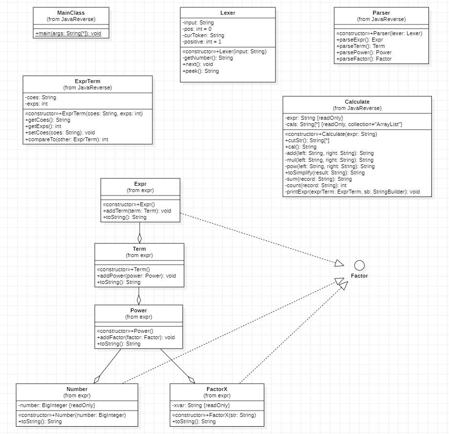
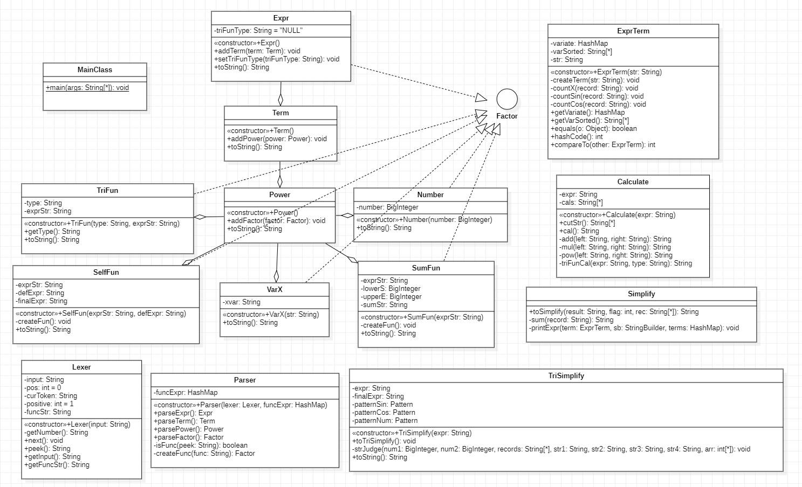
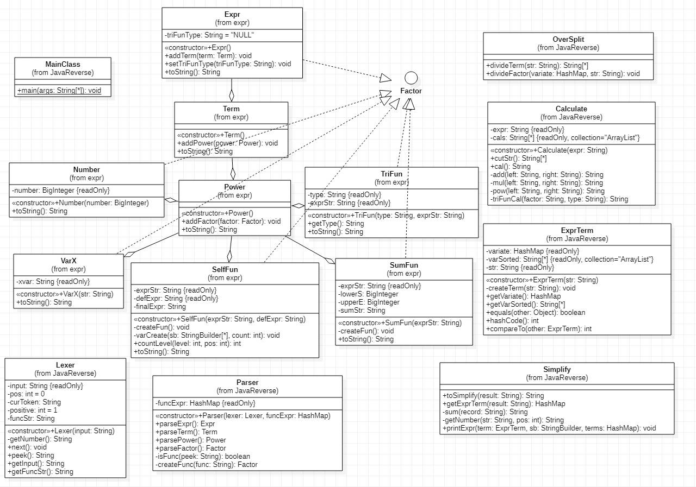

BUAA OO 第一单元总结
第一次作业
简介
本次作业需要完成的任务为：读入一个包含加、减、乘、乘方以及括号（其中括号的深度至多为 1 层）的单变量表达式，输出恒等变形展开所有括号后的表达式。
在本次作业中，展开所有括号的定义是：对原输入表达式 E 做恒等变形，得到新表达式 E’，且 E’中不含有字符 ‘(‘ 和 ‘)’ 。
UML 图与类结构
类图如下

其中，各个类的含义如下：1
2
3
4
5
6
7
8
9
10
11
12|- MainClass：主类
|- expr (package)：表达式包
|- Factor (implement)：因子类
|- Number：常数类
|- FactorX：变量类
|- Power：指数类
|- Term：项类
|- Expr：表达式类
|- Parser：语法分析器
|- Lexer：词法分析器
|- ExprTerm：表达式最简项
|- Calculate: 计算化简类
设计理念
使用了递归下降的方法解析表达式，为之后的各种嵌套打下基础。解析的同时生成后缀表达式，为之后的计算做好准备。
采用了边计算边化简的方法，这样可以显著的提升程序的速度。当计算结束后再化简一次，以保证表达式的最简，最后输出结果。
度量分析
| Class | OCavg | OCmax | WMC | |
|---|---|---|---|---|
| Calculate | 3.80 | 10 | 38 | |
| ExprTerm | 1.80 | 3 | 9 | |
| Lexer | 3.75 | 10 | 15 | |
| MainClass | 1.00 | 1 | 1 | |
| Parser | 2.40 | 5 | 12 | |
| expr.Expr | 1.67 | 3 | 5 | |
| expr.FactorX | 1.00 | 1 | 2 | |
| expr.Number | 1.00 | 1 | 2 | |
| expr.Power | 1.67 | 3 | 5 | |
| expr.Term | 1.67 | 3 | 5 |
代码复杂度总体可以接受，但计算类的复杂度较高，因为此时还没有把化简的部分提取出来。
在第二次作业中，我把化简方法单独提取成了一个类，降低了计算类的复杂度。
方法圈复杂度分析
| Method | CogC | ev(G) | iv(G) | v(G) |
|---|---|---|---|---|
| Calculate.Calculate(String) | 0 | 1 | 1 | 1 |
| Calculate.add(String, String) | 0 | 1 | 1 | 1 |
| Calculate.cal() | 5 | 3 | 2 | 6 |
| Calculate.count(String) | 4 | 1 | 3 | 3 |
| Calculate.cutStr() | 0 | 1 | 1 | 1 |
| Calculate.mul(String, String) | 3 | 1 | 3 | 3 |
| Calculate.pow(String, String) | 2 | 2 | 2 | 3 |
| Calculate.printExpr(ExprTerm, StringBuilder) | 12 | 1 | 6 | 6 |
| Calculate.sum(String) | 3 | 2 | 3 | 3 |
| Calculate.toSimplify(String) | 15 | 4 | 10 | 10 |
| ExprTerm.ExprTerm(String, int) | 5 | 1 | 1 | 3 |
| ExprTerm.compareTo(ExprTerm) | 3 | 3 | 1 | 3 |
| ExprTerm.getCoes() | 0 | 1 | 1 | 1 |
| ExprTerm.getExps() | 0 | 1 | 1 | 1 |
| ExprTerm.setCoes(String) | 0 | 1 | 1 | 1 |
| Lexer.Lexer(String) | 0 | 1 | 1 | 1 |
| Lexer.getNumber() | 3 | 1 | 4 | 4 |
| Lexer.next() | 19 | 7 | 6 | 13 |
| Lexer.peek() | 0 | 1 | 1 | 1 |
| MainClass.main(String[]) | 0 | 1 | 1 | 1 |
| Parser.Parser(Lexer) | 0 | 1 | 1 | 1 |
| Parser.parseExpr() | 1 | 1 | 2 | 2 |
| Parser.parseFactor() | 12 | 3 | 7 | 7 |
| Parser.parsePower() | 1 | 1 | 2 | 2 |
| Parser.parseTerm() | 1 | 1 | 2 | 2 |
| expr.Expr.Expr() | 0 | 1 | 1 | 1 |
| expr.Expr.addTerm(Term) | 0 | 1 | 1 | 1 |
| expr.Expr.toString() | 3 | 1 | 3 | 3 |
| expr.FactorX.FactorX(String) | 0 | 1 | 1 | 1 |
| expr.FactorX.toString() | 0 | 1 | 1 | 1 |
| expr.Number.Number(BigInteger) | 0 | 1 | 1 | 1 |
| expr.Number.toString() | 0 | 1 | 1 | 1 |
| expr.Power.Power() | 0 | 1 | 1 | 1 |
| expr.Power.addFactor(Factor) | 0 | 1 | 1 | 1 |
| expr.Power.toString() | 3 | 1 | 3 | 3 |
| expr.Term.Term() | 0 | 1 | 1 | 1 |
| expr.Term.addPower(Power) | 0 | 1 | 1 | 1 |
| expr.Term.toString() | 3 | 1 | 3 | 3 |
大部分方法圈复杂度较低，在较为合理的范围内。
化简策略
1.将x**2化简为x*x,减少一个字符
2.如果表达式第一项为负，将一个正的项提取到表达式的最前面。
3.合并同类项
4.合理省略了各种数为1的情况。
Bug分析
第一次作业强测互测自测都没有bug。
Hack策略
采用了随机生成数据与手动构造数据相结合的方法。
但因为第一次作业较为简单，最终只Hack到了一个bug。
架构分析
主要参考了训练给出的递归下降的主体结构，通过词法分析器Lexer与语法分析器Parser解析表达式生成后缀表达式。而化简主要运用了正则表达式和捕获组，但面对第二次作业的嵌套时，正则表达式无法成功提取到项，只好在第二次作业对化简方法进行了重构。
心得体会
学到了递归下降方法，并熟悉了正则表达式与捕获组的使用，replaceAll应该慎用，但有时使用可以让表达式的结构更加的规整，降低解析的难度。
第二次作业
简介
本次作业中需要完成的任务为：读入一系列自定义函数的定义以及一个包含简单幂函数、简单三角函数、简单自定义函数调用以及求和函数的表达式，输出恒等变形展开所有括号后的表达式。
在本次作业中，展开所有括号的定义是：对原输入表达式 E 做恒等变形，得到新表达式 E’ 。其中，E’中不再含有自定义函数与求和函数，且只包含必要的括号。
UML 图与类结构
类图如下

其中，各个类的含义如下：1
2
3
4
5
6
7
8
9
10
11
12
13
14
15
16
17|- MainClass：主类
|- expr (package)：表达式包
|- Factor (abstract class)：因子类
|- Number：常数类
|- SelfFun：自定义函数
|- SumFun：求和函数
|- TriFun：三角函数
|- VarX：变量类
|- Power：指数类
|- Term：项类
|- Expr：表达式类
|- Parser：语法分析器
|- Lexer：词法分析器
|- ExprTerm：表达式最简项
|- Calculate: 计算类
|- Simplify: 同类项合并化简
|- TriSimplify: 三角函数化简
度量分析
| Class | OCavg | OCmax | WMC | |
|---|---|---|---|---|
| Calculate | 2.57 | 8 | 18 | |
| ExprTerm | 2.90 | 8 | 29 | |
| Lexer | 4.33 | 14 | 26 | |
| MainClass | 3.00 | 3 | 3 | |
| Parser | 2.86 | 6 | 20 | |
| Simplify | 8.00 | 12 | 24 | |
| TriSimplify | 4.00 | 10 | 16 | |
| expr.Expr | 1.75 | 4 | 7 | |
| expr.Number | 1.00 | 1 | 2 | |
| expr.Power | 1.67 | 3 | 5 | |
| expr.SelfFun | 6.00 | 16 | 18 | |
| expr.SumFun | 3.33 | 6 | 10 | |
| expr.Term | 1.67 | 3 | 5 | |
| expr.TriFun | 1.00 | 1 | 3 | |
| expr.VarX | 1.00 | 1 | 2 |
大部分类的复杂度可以接受，但Simplify和expr.SelfFun复杂度较高。
Simplify是因为本身比较复杂，而expr.SelfFun是因为结构不太合理，实际代码其实并不复杂。
方法圈复杂度分析
| Method | CogC | ev(G) | iv(G) | v(G) |
|---|---|---|---|---|
| Calculate.Calculate(String) | 0 | 1 | 1 | 1 |
| Calculate.add(String, String) | 0 | 1 | 1 | 1 |
| Calculate.cal() | 5 | 3 | 2 | 7 |
| Calculate.cutStr() | 0 | 1 | 1 | 1 |
| Calculate.mul(String, String) | 3 | 1 | 3 | 3 |
| Calculate.pow(String, String) | 2 | 2 | 2 | 3 |
| Calculate.triFunCal(String, String) | 0 | 1 | 1 | 1 |
| ExprTerm.ExprTerm(String) | 0 | 1 | 1 | 1 |
| ExprTerm.compareTo(ExprTerm) | 13 | 8 | 8 | 9 |
| ExprTerm.countCos(String) | 8 | 3 | 5 | 5 |
| ExprTerm.countSin(String) | 8 | 3 | 5 | 5 |
| ExprTerm.countX(String) | 4 | 1 | 3 | 3 |
| ExprTerm.createTerm(String) | 0 | 1 | 1 | 1 |
| ExprTerm.equals(Object) | 3 | 3 | 2 | 4 |
| ExprTerm.getVarSorted() | 0 | 1 | 1 | 1 |
| ExprTerm.getVariate() | 0 | 1 | 1 | 1 |
| ExprTerm.hashCode() | 0 | 1 | 1 | 1 |
| Lexer.Lexer(String) | 0 | 1 | 1 | 1 |
| Lexer.getFuncStr() | 0 | 1 | 1 | 1 |
| Lexer.getInput() | 6 | 1 | 4 | 6 |
| Lexer.getNumber() | 3 | 1 | 4 | 4 |
| Lexer.next() | 27 | 7 | 14 | 22 |
| Lexer.peek() | 0 | 1 | 1 | 1 |
| MainClass.main(String[]) | 3 | 1 | 3 | 3 |
| Parser.Parser(Lexer, HashMap |
0 | 1 | 1 | 1 |
| Parser.createFunc(String) | 1 | 3 | 3 | 3 |
| Parser.isFunc(String) | 1 | 2 | 1 | 2 |
| Parser.parseExpr() | 1 | 1 | 2 | 2 |
| Parser.parseFactor() | 13 | 5 | 8 | 8 |
| Parser.parsePower() | 1 | 1 | 2 | 2 |
| Parser.parseTerm() | 1 | 1 | 2 | 2 |
| Simplify.printExpr(ExprTerm, StringBuilder, HashMap |
25 | 1 | 10 | 11 |
| Simplify.sum(String) | 3 | 2 | 3 | 3 |
| Simplify.toSimplify(String, int, String[]) | 19 | 3 | 11 | 12 |
| TriSimplify.TriSimplify(String) | 0 | 1 | 1 | 1 |
| TriSimplify.strJudge(BigInteger, BigInteger, String[], String, String, String, String, …) | 4 | 1 | 2 | 4 |
| TriSimplify.toString() | 0 | 1 | 1 | 1 |
| TriSimplify.toTriSimplify() | 41 | 8 | 11 | 12 |
| expr.Expr.Expr() | 0 | 1 | 1 | 1 |
| expr.Expr.addTerm(Term) | 0 | 1 | 1 | 1 |
| expr.Expr.setTriFunType(String) | 0 | 1 | 1 | 1 |
| expr.Expr.toString() | 4 | 1 | 4 | 4 |
| expr.Number.Number(BigInteger) | 0 | 1 | 1 | 1 |
| expr.Number.toString() | 0 | 1 | 1 | 1 |
| expr.Power.Power() | 0 | 1 | 1 | 1 |
| expr.Power.addFactor(Factor) | 0 | 1 | 1 | 1 |
| expr.Power.toString() | 3 | 1 | 3 | 3 |
| expr.SelfFun.SelfFun(String, String) | 0 | 1 | 1 | 1 |
| expr.SelfFun.createFun() | 20 | 1 | 10 | 15 |
| expr.SelfFun.toString() | 0 | 1 | 1 | 1 |
| expr.SumFun.SumFun(String) | 0 | 1 | 1 | 1 |
| expr.SumFun.createFun() | 11 | 1 | 7 | 8 |
| expr.SumFun.toString() | 2 | 2 | 2 | 3 |
| expr.Term.Term() | 0 | 1 | 1 | 1 |
| expr.Term.addPower(Power) | 0 | 1 | 1 | 1 |
| expr.Term.toString() | 3 | 1 | 3 | 3 |
| expr.TriFun.TriFun(String, String) | 0 | 1 | 1 | 1 |
| expr.TriFun.getType() | 0 | 1 | 1 | 1 |
| expr.TriFun.toString() | 0 | 1 | 1 | 1 |
| expr.VarX.VarX(String) | 0 | 1 | 1 | 1 |
| expr.VarX.toString() | 0 | 1 | 1 | 1 |
三角函数化简方法TriSimplify.toTriSimplify()本身十分复杂，所以复杂度较高。
化简策略
除了第一次作业的化简外，添加了如下化简方式：
1.对于 sin(Term)**2 + cos(Term)** = 1 的化简，考虑到了所有的形式。
2.对于cos(0) = 1 的化简。
3.对于sin(0) = 0 的化简。
Bug分析
互测没有出现bug，因为bug出在函数调用上，互测无法测试函数。
强测出现了一个bug，我在解析自定义函数递归调用Lexer和Parser时没有递归的替换字符串，导致表达式结构解析错误，
使得对于自定义函数中的三角函数，在生成后缀表达式时将缺少一个负号，带来了惨痛的后果。
出现了bug的方法和未出现bug的方法在代码行和圈复杂度上并没有明显差异。
Hack策略
采用了随机生成数据与手动构造数据相结合的方法。
第二次作业相比于第一次作业复杂度提升了很多，所以测出了不少Bug。
分析同学代码发现 BUG 主要集中在对嵌套和各种函数的处理上。
架构分析
相比于第一次，加入了SumFun,SelfFun和TriFUn三个因子，并将化简方法提取成了Simplify类。
增加了一个用于三角函数化简的TriSimplify类。
心得体会
全面的测试非常重要。
笔者在课下较为全面的测试了各种情况，但在测试自定义函数时偷了懒，没有测试到带负号的三角函数，
最后导致了的毁灭性后果。
第三次作业
简介
本次作业中相比于第二次作业，增加了多种嵌套形式，其余相同。
UML 图与类结构
类图如下

其中，各个类的含义如下：1
2
3
4
5
6
7
8
9
10
11
12
13
14
15
16
17|- MainClass：主类
|- expr (package)：表达式包
|- Factor (abstract class)：因子类
|- Number：常数类
|- SelfFun：自定义函数
|- SumFun：求和函数
|- TriFun：三角函数
|- VarX：变量类
|- Power：指数类
|- Term：项类
|- Expr：表达式类
|- Parser：语法分析器
|- Lexer：词法分析器
|- ExprTerm：表达式最简项
|- OverSplit：项与因子提取类
|- Calculate: 计算类
|- Simplify: 同类项合并化简
度量分析
| Class | OCavg | OCmax | WMC | |
|---|---|---|---|---|
| Calculate | 3.57 | 8 | 25 | |
| ExprTerm | 2.29 | 8 | 16 | |
| Lexer | 4.33 | 14 | 26 | |
| MainClass | 3.00 | 3 | 3 | |
| OverSplit | 11.00 | 16 | 22 | |
| Parser | 2.86 | 6 | 20 | |
| Simplify | 7.00 | 11 | 35 | |
| expr.Expr | 1.75 | 4 | 7 | |
| expr.Number | 1.00 | 1 | 2 | |
| expr.Power | 1.67 | 3 | 5 | |
| expr.SelfFun | 4.40 | 11 | 22 | |
| expr.SumFun | 3.67 | 7 | 11 | |
| expr.Term | 1.67 | 3 | 5 | |
| expr.TriFun | 1.00 | 1 | 3 | |
| expr.VarX | 1.00 | 1 | 2 |
OverSplit类的OCavg值很高，可能是因为if分支较多导致。
方法圈复杂度分析
| Method | CogC | ev(G) | iv(G) | v(G) |
|---|---|---|---|---|
| Calculate.Calculate(String) | 0 | 1 | 1 | 1 |
| Calculate.add(String, String) | 0 | 1 | 1 | 1 |
| Calculate.cal() | 5 | 3 | 2 | 7 |
| Calculate.cutStr() | 0 | 1 | 1 | 1 |
| Calculate.mul(String, String) | 3 | 1 | 3 | 3 |
| Calculate.pow(String, String) | 2 | 2 | 2 | 3 |
| Calculate.triFunCal(String, String) | 16 | 6 | 4 | 11 |
| ExprTerm.ExprTerm(String) | 0 | 1 | 1 | 1 |
| ExprTerm.compareTo(ExprTerm) | 13 | 8 | 8 | 9 |
| ExprTerm.createTerm(String) | 0 | 1 | 1 | 1 |
| ExprTerm.equals(Object) | 3 | 3 | 2 | 4 |
| ExprTerm.getVarSorted() | 0 | 1 | 1 | 1 |
| ExprTerm.getVariate() | 0 | 1 | 1 | 1 |
| ExprTerm.hashCode() | 0 | 1 | 1 | 1 |
| Lexer.Lexer(String) | 0 | 1 | 1 | 1 |
| Lexer.getFuncStr() | 0 | 1 | 1 | 1 |
| Lexer.getInput() | 6 | 1 | 4 | 6 |
| Lexer.getNumber() | 3 | 1 | 4 | 4 |
| Lexer.next() | 27 | 7 | 14 | 22 |
| Lexer.peek() | 0 | 1 | 1 | 1 |
| MainClass.main(String[]) | 3 | 1 | 3 | 3 |
| OverSplit.divideFactor(HashMap |
56 | 7 | 22 | 25 |
| OverSplit.divideTerm(String) | 11 | 1 | 6 | 7 |
| Parser.Parser(Lexer, HashMap |
0 | 1 | 1 | 1 |
| Parser.createFunc(String) | 1 | 3 | 3 | 3 |
| Parser.isFunc(String) | 1 | 2 | 1 | 2 |
| Parser.parseExpr() | 1 | 1 | 2 | 2 |
| Parser.parseFactor() | 13 | 5 | 8 | 8 |
| Parser.parsePower() | 1 | 1 | 2 | 2 |
| Parser.parseTerm() | 1 | 1 | 2 | 2 |
| Simplify.getExprTerm(String) | 9 | 1 | 4 | 5 |
| Simplify.getNumber(String, int) | 5 | 3 | 4 | 4 |
| Simplify.printExpr(ExprTerm, StringBuilder, HashMap |
25 | 1 | 10 | 11 |
| Simplify.sum(String) | 14 | 2 | 11 | 13 |
| Simplify.toSimplify(String) | 17 | 3 | 10 | 11 |
| expr.Expr.Expr() | 0 | 1 | 1 | 1 |
| expr.Expr.addTerm(Term) | 0 | 1 | 1 | 1 |
| expr.Expr.setTriFunType(String) | 0 | 1 | 1 | 1 |
| expr.Expr.toString() | 4 | 1 | 4 | 4 |
| expr.Number.Number(BigInteger) | 0 | 1 | 1 | 1 |
| expr.Number.toString() | 0 | 1 | 1 | 1 |
| expr.Power.Power() | 0 | 1 | 1 | 1 |
| expr.Power.addFactor(Factor) | 0 | 1 | 1 | 1 |
| expr.Power.toString() | 3 | 1 | 3 | 3 |
| expr.SelfFun.SelfFun(String, String) | 0 | 1 | 1 | 1 |
| expr.SelfFun.countLevel(int, int) | 2 | 1 | 2 | 3 |
| expr.SelfFun.createFun() | 8 | 1 | 5 | 7 |
| expr.SelfFun.toString() | 0 | 1 | 1 | 1 |
| expr.SelfFun.varCreate(StringBuilder[], int) | 16 | 1 | 10 | 13 |
| expr.SumFun.SumFun(String) | 0 | 1 | 1 | 1 |
| expr.SumFun.createFun() | 13 | 1 | 9 | 10 |
| expr.SumFun.toString() | 2 | 2 | 2 | 3 |
| expr.Term.Term() | 0 | 1 | 1 | 1 |
| expr.Term.addPower(Power) | 0 | 1 | 1 | 1 |
| expr.Term.toString() | 3 | 1 | 3 | 3 |
| expr.TriFun.TriFun(String, String) | 0 | 1 | 1 | 1 |
| expr.TriFun.getType() | 0 | 1 | 1 | 1 |
| expr.TriFun.toString() | 0 | 1 | 1 | 1 |
| expr.VarX.VarX(String) | 0 | 1 | 1 | 1 |
| expr.VarX.toString() | 0 | 1 | 1 | 1 |
OverSplit.divideFactor方法因为if分支较多导致复杂度较高。
化简策略
与第二次作业大致相同，但删去了对于 sin(Term)**2 + cos(Term)** = 1 的化简。
Bug分析
本次在互测中出现了一个bug，也是由于递归调用Lexer和Parser时字符串替换没有随之递归而导致的。
出现了bug的方法和未出现bug的方法在代码行和圈复杂度上并没有明显差异。
Hack策略
主要采用随机爆破的方式，同时手动构造了一些可能导致Format Error和爆int爆栈的数据。
Hack成果显著，很多同学考虑的并没有那么全面
架构分析
第三次作业架构变化不大。
增加了一个OverSplit类用来代替之前使用的split方法，用以提取项和因子。
前两次作业使用的正则表达式不再适用，本次作业使用HashMap用于合并同类项。
其他部分大致与第二次作业一致。
心得体会
代码架构的设计对于面向对象编程是非常重要的，好的架构能让编码事半功倍，反之亦然。
第一单元心得体会
第一单元主要使我对于 Java 的了解更加深入了，对于某些方法更加的熟悉，并且了解了递归下降的方法。
在对于代码的不断重构中，我体会到了架构对于面对对象编程的重要性。
类的变量是状态，类的方法是行为，面对对象本身就是对自然世界的抽象表述，
而更加合理的类的划分与各种各样的设计模型，将是我之后学习的重点。